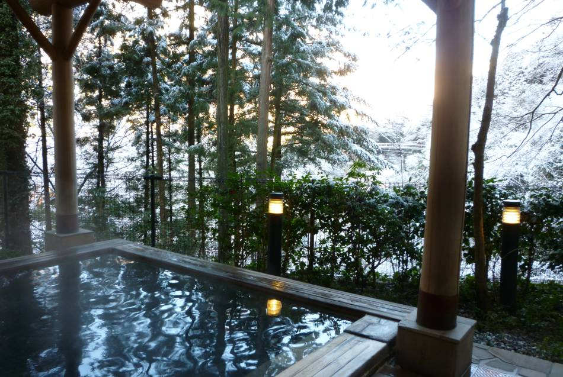

겨울에 도쿄에 오시면 추위를 피하기 위한 목도리나 장갑, 재킷이 필요합니다. 하지만 이 겨울에 익숙해진다면 겨울 특유의 깨끗한 경치와 힐링이 되는 음식을 즐길수 있고, 몇백년동안 지속되어온 행사들이 열리는 계절이 바로 겨울이라는 것을 아시게 될겁니다. 깨끗하고 상쾌한 공기, 넓고 푸른 하늘, 비가 거의 내리지 않는 날씨 덕분에 도심과 주변 풍경이 더 아름다워집니다.
힌트
-
도쿄의 겨울의 평균 기온은 0 ~ 8℃입니다. 두꺼운 재킷이나 목도리등 으로 추위을 이겨낼 대책을 세우세요.
-
추위 대책을 세웠는데도 부족하다면 근처 편의점에서 '손난로'를 구매해 보세요.
-
겨울은 습도가 낮고 공기가 맑습니다. 이 시기에 도쿄 스카이트리에서는 후지산도 잘 보입니다.
마음까지 따뜻해지는 다정한 음식
일본요리는 계절에 따라 다양하게 변합니다. 여름에는 야외에서 즐기는 바비큐나 꼬치구이, 차가운 면요리 등이 인기가 있지만, 겨울에는 얼큰한 맛의 조림이나 전골요리가 사람들의 사랑을 독차지합니다.
편안하게 ‘전골요리’를 즐기자
일본의 겨울 풍물시로도 유명한 푸짐한 ‘나베(전골)’ 요리도 꼭 한번 도전해 보세요. 스모 선수들이 좋아하는 ‘잔코나베’에서부터 ‘김치전골’과 ‘곱창전골’ 등에 이르기까지 다양한 선택이 가능합니다.
고기나 야채 조림요리 테이크아웃
더 캐주얼한 거리음식을 즐기려면 다양한 종류의 ‘오뎅’을 드셔 보세요. 생선으로 우려낸 맛국물에 푹 삶은 고기와 소시지, 계란, 무 등을 고를 수 있습니다. 오뎅은 편의점이라면 기본적으로 어디서나 판매하고 있습니다. 거리의 포장마차에서도 흔히 볼 수 있는 메뉴입니다.
환상적인 크리스마스 불빛이 연말 분위기 연출
크리스마스 시즌까지의 도쿄는 화려한 일루미네이션과 세련된 장식으로 활기가 넘칩니다. 일본에서는 전통적으로 크리스마스보다 신정을 더 중시해 왔지만, 도시는 연말연시 기간 내내 고양된 분위기에 사로잡힙니다. 인기 일루미네이션을 즐기시려면 도심부의 ‘카렛타 시오도메’, 신주쿠의 ‘도쿄 미드타운’, 오모테산도, 긴자, 나카메구로, 에 비스의 거리를 방문하시면 됩니다.
편안한 입욕으로 겨울 추위를 날려버린다
일본에는 온천이나 입욕 문화가 뿌리내려 있기 때문에, 겨울은 전통적인 입욕을 즐길 수 있는 최적의 계절입니다. 도쿄에는 수많은 대중탕이 있지만, 하코네나 닛코까지 조금만 나가면 최고의 온천 체험을 즐길 수 있습니다.

축제
성대한 축제와 춤, 불꽃놀이는 여름을 즐겁게 만들지만, 겨울에도 흥미로운 풍습이나 이벤트가 많습니다.
새해 설날
여러분이 우연히도 설날을 끼고 일본 관광을 하게 되셨다면 1월 1일(오전 0시부터) ‘메이지진구 신사’에 가셔서 일본에서 가장 많은 인파가 몰리는 ‘하쓰모데’(신사나 절에서 올리는 새해 첫 참배)’에 참가해 보세요. 본당에 도착하면 시주함에 5엔짜리 동전을 넣고, 절을 하고(두 번), 손뼉을 치고(두 번) 행복을 기원합시다. 그리고 마지막으로 다시 한 번 절을 합니다.
콩 뿌리기 축제
2월 3일은 공식적으로 겨울이 끝나는 날입니다. 따라서 일본 사람들은 이 날을 축하하고 콩을 던져 악귀를 물리치는 ‘세쓰분’ 축제에 참가합니다. 가장 큰 세쓰분 축제를 보려면 정오부터 오후 1시 사이에 도쿄 도심에 있는 ‘조조지 절’로 가 보세요. 콩 뿌리기 체험은 물론 일본의 유명인도 만날 수 있고, 현지 노점에서 음식도 즐길 수 있습니다.
기타 정보